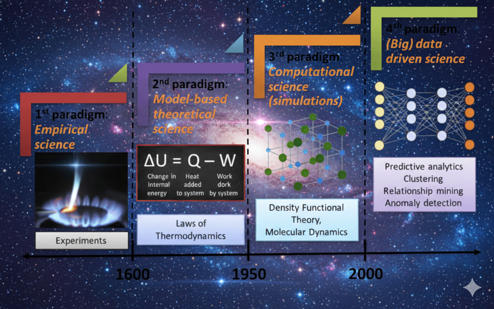

1. Climbing the Ladder of Abstraction: My Computationally Irreducible Journey#
{kind=link}

The Evolution of Scientific Paradigms: A visual journey through the four paradigms of scientific discovery, from empirical experimentation (1600s) through model-based theoretical science (1950s) to computational simulations and modern data-driven AI approaches (2000s). Source: [9]#
The history of science is a centuries-long conversation on how we know what we know, a dialectic that began with Plato’s world of pure forms and Aristotle’s empirical observations, and which found its synthesis in the Scientific Revolution. When Galileo and Newton fused reason and observation into the scientific method, they gave humanity a systematic way to learn.
My own journey began with a personal revolution: an awakening to this same rigorous, hypothesis-driven way of thinking. Driven by a need to solve complex problems by finding their most elegant, fundamental solution, I unknowingly embarked on a path that mirrors the evolution of scientific discovery itself: a climb up the ladder of abstraction from the axioms of theoretical mechanics, through empirical validation and digital simulation, to the data-driven frontiers of AI.
I later understood this journey to be computationally irreducible: there was no shortcut to this understanding; like the universe itself, it had to be run, step by step.
1.1. Paradigm 1: The Theoretical World of First Principles#
The Foundation of Mathematical Reasoning
For two millennia, mathematics was built upon the unshakeable bedrock of Euclid’s five postulates. Yet the fifth postulate, the parallel axiom, which essentially states that parallel lines never meet, remained a profound puzzle. Generations of mathematicians attempted to prove it from the others, or break it to find a contradiction. In doing so, they achieved something far more revolutionary: they discovered entirely new, consistent non-Euclidean geometries. Einstein’s general theory of relativity revealed that gravity is not a force but a curvature of spacetime. Riemann’s elliptic geometry provided the essential mathematical language to describe how the universe works on its largest scales [1]. This is the ultimate power of the first paradigm: exploring the limits of a system doesn’t just test it; it can unlock entirely new worlds.
In retrospect, my own entry into this paradigm was the severe intellectual test of preparing for India’s competitive exams like IIT-JEE and BITSAT. This was more than academic; it was a crucible that forged mental habits of precise abstraction and systematic analysis. Navigating the deep waters of texts like I.E. Irodov demanded peeling back layers of complexity to reach essential truths. The enduring relevance of this training is now evident in a surprising place: artificial intelligence. Today, the world’s most advanced LLMs are benchmarked against these same exams, which have become a global standard for the limits of creative reasoning in both humans and machines.
1.2. Paradigm 2: The Empirical World of Physical Validation#
From Theory to Practice: The Power of Observation
For me, the most powerful intuition for the empirical paradigm comes from a surprising place: a 19th-century maternity ward. In the 1840s, Vienna’s General Hospital had two clinics, but one had a terrifyingly high maternal mortality rate from childbed fever. The physician Ignaz Semmelweis observed a crucial difference: the doctors and medical students in the high-mortality clinic would routinely perform autopsies on corpses and then, without washing their hands, proceed directly to the maternity ward to deliver babies. He couldn’t prove causation, but the correlation was undeniable. Lacking a full theory of germs, he instituted a simple, radical experiment based on this powerful observation: mandatory handwashing with a chlorine solution. The mortality rate plummeted. The data was undeniable, even though the underlying “why” would not be understood for decades [2].
Tip
This story perfectly captures the essence of empirical discovery: the humbling, essential step where a simple observation, rigorously applied, can change the world, even in the absence of a complete theory.
My Personal Journey Through the Empirical Paradigm
My own need to connect theory with practice truly took shape during my bachelor’s in Mechanical Engineering. In the workshop, I experienced the surreal satisfaction of building physical things, designing gears on a lathe, programming CNC machines, and doing spot welding. I believe everyone should have this foundational experience of experimentation.
This purely physical work began to merge with the digital during my internship at the National Aerospace Laboratories, where my bachelor’s thesis involved predicting the material properties of a new hybrid composite. For the first time, I was using simulation and mathematical modeling in MATLAB to represent a physical system. This initial taste of bridging the empirical and computational worlds at scale led directly to my first job out of college at Fiat Chrysler Automobiles. As part of the engine testing and development team, I was immersed in a data-rich environment, analyzing high-dimensional data streams from engine dynamometers. My work was a direct dialogue between principle and practice:
Using statistical methods to perform root-cause analysis on performance anomalies
Translating complex test results into actionable insights for design teams
Leading a team of 15 associates responsible for engine and transmission durability testing
My theoretical models were an essential guide for interpreting the chaotic, real-world data from engine control units (ECUs). But I hit the same inherent wall that science has repeatedly encountered: physical testing is slow, expensive, and reactive. To truly innovate, we needed to move beyond observation to prediction.
1.3. Paradigm 3: The Computational World of Digital Simulation#
Digital Twins and Computational Irreducibility
What if our universe is the output of a simple computer program? Stephen Wolfram has shown how simple rules, like those in a cellular automaton, can generate patterns of immense complexity. This is the computational paradigm taken to its ultimate conclusion: building digital twins of reality to explore possibilities that are too slow, expensive, or dangerous to test physically.
But this vision comes with a catch, a concept Wolfram calls “computational irreducibility.” For many complex systems, there is no shortcut to knowing the outcome. You cannot simply solve an equation; you must run the simulation, step-by-step, to see what happens [3]. This is computational irreducibility in action, and it represents the next logical step for science when physical experiments reach their limits.
Warning
Computational Irreducibility: For many complex systems, there is no algorithmic shortcut to predict the outcome, you must run the full simulation to see what happens.
My Transition to the Computational Paradigm
The limitations I encountered in the empirical world naturally pushed my journey toward this computational paradigm during my Master’s in Computational Engineering [7]. The program armed me with the mathematical machinery to build these simulations, diving deep into:
Tensor Calculus - for understanding multidimensional relationships
Numerical Methods - for solving complex equations computationally
Convex Optimization - for finding optimal solutions efficiently
While these tools were powerful for classical modeling with Finite Element Methods, a pivotal insight emerged through electives in Supervised Methods and Deep Learning: I realized that while classical simulation builds a model from first principles, machine learning derives the model from data. This was the promise of a new way of thinking.
This insight prompted a deliberate pivot. My master thesis became the first application of this new mindset, where I used my classical optimization knowledge to solve a core machine learning problem, designing the ACF-BDCA algorithm to accelerate non-linear SVM training by over 30%.
I then took this hybrid approach to Kopernikus Automotive, developing perception models for autonomous driving on resource-constrained edge devices. That industrial experience was the final catalyst. It was there, confronting the sheer, unpredictable variability of the real world, that I understood the limitations of even the most sophisticated handcrafted models.
The experience crystallized a single, driving question that would define the next stage of my career: what if the system could learn the rules for itself, autonomously?
1.4. Paradigm 4: The Data-Driven World of Intelligent Learning#
The Age of AI and the Bitter Lesson
In 2016, a machine played a move that shocked the world. In its match against Go grandmaster Lee Sedol, DeepMind’s AlphaGo played “Move 37”, a move so alien and creative it was initially thought to be a mistake. It wasn’t. It was a glimpse of true intelligence, discovered not from human instruction, but through self-play [4].
This was the ultimate validation of what AI researcher Rich Sutton calls “The Bitter Lesson”: the biggest breakthroughs consistently come not from clever human-designed knowledge, but from general-purpose methods that leverage massive amounts of computation [5]. The lesson, underpinned by the Universal Approximation Theorem [6], is to stop hand-crafting rules and instead build systems that can learn them from data. This is the fourth paradigm.
Note
The Bitter Lesson: The most important lesson from decades of AI research is that general methods that leverage computation are ultimately more effective than methods that leverage human knowledge.
My PhD Research: Applying the Fourth Paradigm
My PhD research is a direct application of this principle. I focus on deep reinforcement learning (RL), a quintessential general-purpose method that allows an agent to learn optimal behavior through trial and error. Faced with a complex industrial control problem riddled with sparse rewards and conflicting objectives, I didn’t attempt to hand-craft a solution.
Instead, I trusted the Bitter Lesson, employing methods like:
Proximal Policy Optimization (PPO) for stable policy learning
Curriculum learning for progressive skill acquisition
Hybrid architectures combining RL with classical ML safety models
To bridge the gap between pure learning and real-world safety constraints, I designed a novel hybrid architecture that integrates an offline-trained XGBoost collision model at inference time. This work, which led to two publications at the prestigious European Conference on Machine Learning (ECML ‘24 & ‘25), culminated in something more: the creation and release of ContainerGym, an open-source RL benchmark.
Important
My goal was not just to solve one problem, but to provide a tool for the entire community to explore these general-purpose methods, accelerating our collective climb up this new rung of the ladder.
1.5. The Next Rung: AI-Driven Discovery#
Building the Future of Human-AI Collaboration
This climb has taught me that progress is about layering new capabilities on a strong foundation. My first-principles training remains the bedrock of everything I build. But the ladder extends further. While my PhD research focuses on advancing the frontier of what’s possible, my work as a software developer at Ecoki.de has been about making these powerful tools accessible. There, I’ve been a lead contributor to a low-code machine learning platform designed to empower small-scale industries in Germany. I spearheaded the design of its core microservices architecture and created the modular “BuildingBlock” and “Pipeline” frameworks that allow users to construct complex ML workflows without deep coding expertise.
This experience represents a crucial step toward the fifth paradigm: AI-Driven Discovery. Building tools like ContainerGym pushes the research forward, but building platforms like Ecoki democratizes it. By abstracting away the implementation details, we empower domain experts to become the scientists, focusing on hypothesis and discovery rather than on the code. This emerging epoch is not just about using AI to analyze data; it’s about creating a closed-loop system where AI becomes an active partner in the scientific method itself. The visions of pioneers like Yoshua Bengio, who speaks of a “cautious scientist AI,” and Yann LeCun, with his work on predictive world models, lay the foundation for this future. We are already cognitive cyborgs, with language models integrated into our daily workflows. What breakthroughs will come from a deep human-AI partnership, where an AI serves as an intellectual sparring partner, exploring conceptual spaces we can’t even imagine?
Conclusion: The Computationally Irreducible Journey
My journey through these paradigms was computationally irreducible. As Steve Jobs famously said, you can only connect the dots looking backwards; you can’t connect them looking forwards. There was no shortcut because the path wasn’t clear from the start; I had to live each step to create the next dot.
Only now, in retrospect, can I see the line connecting a foundation in first principles to the frontier of AI. The tools have evolved beyond imagination, but the core drive remains: to understand, to build, and to discover.
The purpose is to architect the solutions for the next order of complexity and, perhaps, to help build an AI sparring partner that will define the next paradigm.
—My dream